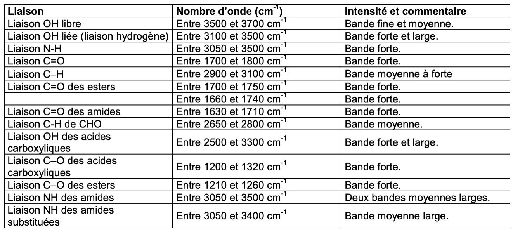
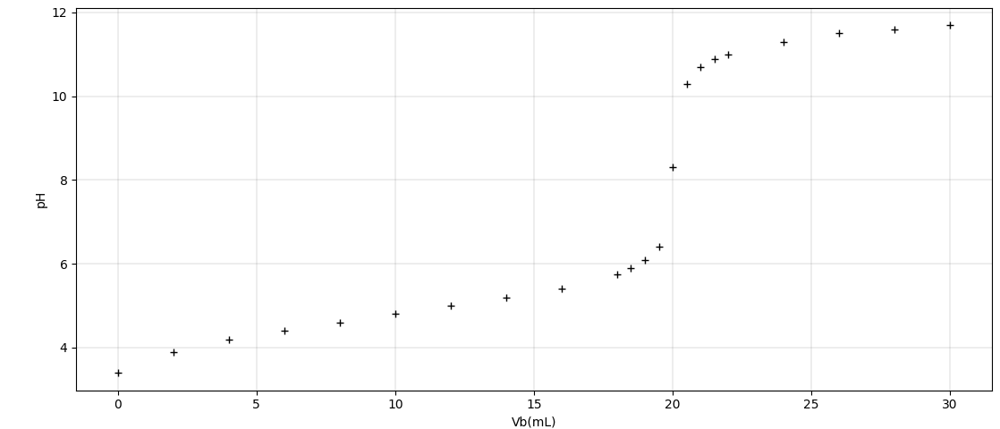
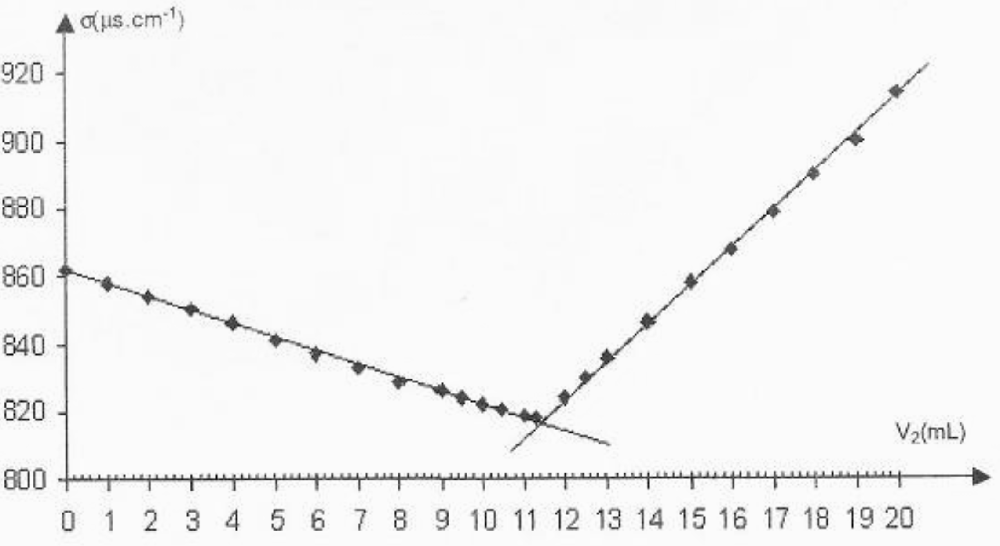
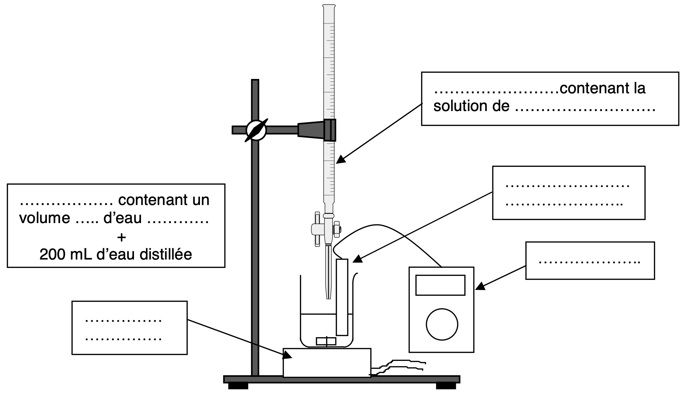
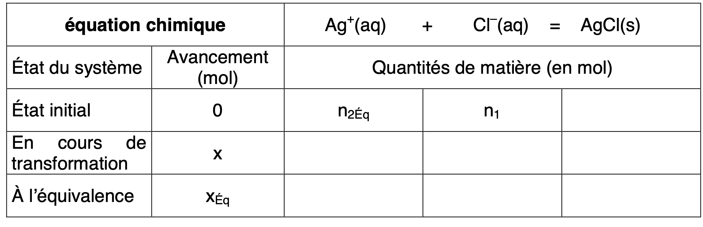

L’acidité d’un vin peut être exprimée de deux façons, à partir de son
acidité totale ou de son pH [...]. L’acidité totale est surtout un
indicateur des caractéristiques gustatives, alors que le pH intervient
dans la stabilité du vin. L’acidité du vin (pH compris entre 2,7 et 3,7)
est principalement due à la présence d’acides organiques en partie à
l’état libre; l’acidité totale d’un vin est constituée par les acides
représentant l’acidité fixe (acides tartrique, malique, lactique,
citrique, etc) et par des molécules représentant l’acidité volatile
(essentiellement l’acide éthanoïque, et l’éthanoate d’éthyle susceptible
de libérer l’acide éthanoïque par saponification) [...].
Le goût aigre de l’acide éthanoïque est perçu lorsque sa concentration
est supérieure à 0.6 g L−1
D’après « Chimie dans la maison » - Cultures et Techniques
Masse molaire de l’acide éthanoïque ( : \(M=\SI{60}{\gram\per\mole}\))
Formule semi-développée de l’acide lactique :
Déterminer la valeur de la condentration en quantité de matière en ions oxonium d’un vin dont le pH est égal à 3.0. (1)
Calculer la concentration molaire de l’acide éthanoïque pour que le goût aigre soit perçu. (1)
L’acide lactique se forme lors de la fermentation du vin. Sa formule semi-développée est représentée dans les données. Recopier la formule en entourant et nommant les groupes caractéristiques.(1)
Justifier la propriété acide de l’acide lactique.(1)
Entre les deux spectres infra-rouge fournis en Annexe, justifier lequel appartient à l’acide lactique.(1)
On dispose d’un volume \(V=\SI{50}{mL}\) d’une solution \(S\) d’acide éthanoïque de concentration molaire en soluté apporté \(C=\SI{1,0E-2}{\mole\per\liter}\) et de \(pH = 3,4\).
Écrire l’équation de la réaction de l’acide éthanoïque avec l’eau. (1)
Calculer la concentration molaire en ions oxonium effective de la solution. (1)
La réaction entre l’acide éthanoïque et l’eau est elle totale ? (1)
Au laboratoire, l’étiquette d’un flacon d’une solution d’acide
éthanoïque est effacée. On décide alors d’éffectuer un titrage afin de
déterminer la concentration molaire de cette solution.
Pour cela, on dispose d’une solution d’hydroxyde de sodium (; ) de
concentration molaire égale à 1,0E-2 mol L−1 et du matériel
suivant :
fioles jaugées de 50.0 mL et de 100 mL
pipette jaugées de 5.0 mL et de 10 mL
bécher de 100 mL
éprouvette graduée de 50 mL
eau déminéralisée
Avec la solution d’hydroxyde de sodium ainsi préparée, on procède au titrage de \(V_A = \SI{20,0}{mL}\) de solution d’acide éthanoïque. Les valeurs du pH , en fonction du volume \(V_B\) de solution d’hydroxyde de sodium versé, sont donnée dans le tableau suivant :
| \(V_B\) (mL) | ,0 | ,0 | ,0 | ,0 | ,0 | ,0 | ,0 | ,0 | ,0 | ,5 | |
|---|---|---|---|---|---|---|---|---|---|---|---|
| pH | ,4 | ,9 | ,2 | ,4 | ,6 | ,8 | ,0 | ,2 | ,4 | ,75 | ,9 |
| \(V_B\) (mL) | ,0 | ,5 | ,0 | ,5 | ,0 | ,5 | ,0 | ,0 | ,0 | ,0 | ,0 |
|---|---|---|---|---|---|---|---|---|---|---|---|
| pH | ,1 | ,4 | ,3 | ,3 | ,7 | ,9 | ,0 | ,3 | ,5 | ,6 | ,7 |
Écrire l’équation de la réaction qui d’effectue entre la solution d’acide éthanoïque et la solution d’hydroxyde de sodium. (1)
Déterminer, graphiquement, sur la courbe donnée en Annexe, les coordonnées du point d’équivalence, en indiquant la méthode utilisée. (1)
Déterminer la concentration \(C_A\) de la solution d’acide éthanoïque étudiée. (2)
Conclure sur la qualité du vin étudié.(1)
Les eaux minérales contiennent des espèces dissoutes. La législation impose une étiquette précisant les auantités contenues dans un litre d’eau. Sur l’étiquette endommagée d’une bouteille d’eau minérale gazeuse, on peut lire les valeurs des concentrations massiques en ions données dans le tableau ci-dessous. Les valeurs concernant les ions chlorure et calcium ne sont plus lisibles.
| Cation | Sodium | Potassium | Calcium | Magnésium |
|---|---|---|---|---|
| Concentration massique (mg L−1) | ? | |||
| Anion | Hydrogénocarbonate | Chlorure | Sulfate | Fluorure |
| Concentration massique (mg L−1) | ? |
Cet exercice propose, en deux parties, deux méthodes de titrage pour retrouver les valeurs manquantes :
un titrage par précipitation pour déterminer la concentration massique en ions chlorure
un titrage complexométrique pour déterminer la concentration massique en ions calcium
On dégaze l’eau minérale par agitation et on prélève un volume \(V_1 = \SI{20,0}{mL}\) que l’on introduit
dan sun grand bécher. On rajoute un volume d’environ 200 mL d’eau
distillée. On plonge dans le milieu une cellule de conductimétrie. À
l’aide d’une burette graduée, on ajoute progressivement une solution
aqueuse de nitrate d’argent (; ) de concentration molaire \(c_2 =
\SI{2,00E-2}{\mole\per\liter}\).
Le mélange obtenu dans le bécher est maintenu sous une agitation
régulière le Document [doc3] donne la courbe d’évolution de la
conductivité \(\theta\) du mélange en
fonction du volume \(V_2\) versé de la
solution de nitrate d’argent.
Compléter le schéma de le Document 1 du dispositif utilisé lors de ce titrage.
Lors de ce titrage, les ions chlorure réagissent avec les ions argent pour former un précipité blanc de chlorure d’argent . La transformation associée à la réaction est totale. L’équation de la réaction de précipitation est la suivante : \[\ce{Ag+(aq) + Cl-(aq) = AgCl(s)}\]
Compléter le tableau décrivant l’évolution du système à l’équivalence donnée par le Document 2. On note \(n_{2eq}\) la quantité de matière (en mol) d’ions argent versée à l’équivalence.
En décrire la relation entre la quantité initiale \(n_1\) en mol des ions chlorure et la quantité de matière \(n_{2eq}\) en mol d’ions argent versée à l’équivalence.
Quel évènement correspond au point d’intersection des deux segments de droite de la courbe du Document 1 ? En déduire la valeur du volume \(V_{2eq}\) de la solution de nitrate d’argent versé à l’équivalence.
En utilisant les questions précédentes, calculer la concentration \(c_1\) des ions chlorure dans l’eau minérale étudiée.
Calculer la concentration massique notée \(t_1\) des ions chlorure de cette eau minérale. On donnera le résultat en mg L−1
On utilise comme solution titrante, une solution d’acide
éthylènediaminetétraacétique (EDTA). Ce titrage se fait en présence d’un
indicateur coloré de fin de réaction et d’une solution tampon permettant
de maintenir le pH de la solution entre 9 et 10.
On réalise le titrage d’un volume \(V'_1 =
\SI{20,0}{mL}\) d’eau minérale par la solution d’EDTA de
concentration \(c'_2 =
\SI{5,0E-3}{\mole\per\liter}\). À l’équivalence, le volume versé
d’EDTA est \(V'_{2eq}
=\SI{10,8}{mL}\).
En milieu basique, l’EDTA contient des ions notés qui réagissent
avec les ions calcium () et magnésium () contenus dans l’eau minérale
pour former des complexes très stables selon les équations : \[\ce{Ca^2+(aq) + Y^4-(aq) = [CaY]^2-(aq)}\]
\[\ce{Mg^2+(aq) + Y^4-(aq) =
[MgY]^2-(aq)}\] Soient \(n_i(\ce{Ca^2+})\) et \(n_i(\ce{Mg^2+})\) les quantités de matière
innitiales d’ions calcium et magnésium présents dans le volume \(V_1\) d’eau minérale, \(n'_{2eq}\) désigne la quantité de
matière d’ions versée pour atteindre l’équivalence.
Quelle relation lie ces trois quantités de matière ?
Montrer que la somme des concentrations molaires des ions calcium et magnésium est donnée par la relation : \[[\ce{Ca^2+}] + [\ce{Mg^2+}] = \dfrac{C'_2 \cdot V'_{2eq}}{V'_1}\]
À l’aide de la valeur (donnée dans le tableau en introduction) de la concentration massique des ions magnésium contenus dans l’eau minérale étudiée, en déduire la valeur de la concentration massique (en mg L−1) des ions calcium dans cette eau.
Données : Masses molaires atomiques \(M(\ce{Ca}) = \SI{40,1}{\gram\per\mole} \hspace{2em} M(\ce{Mg}) = \SI{24,3}{\gram\per\mole}\)




